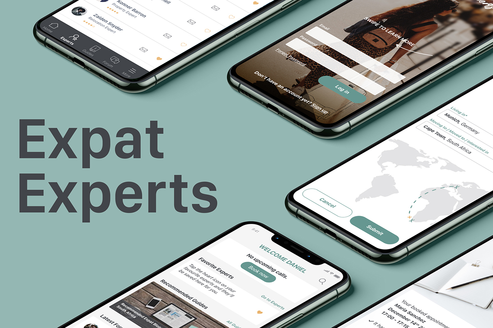

<!DOCTYPE html>
<html lang="en" dir="ltr">

<head>
  <meta charset="utf-8">
  <link href="img/favicon.ico" rel="shortcut icon">
  <title>Pia Lettenbauer UX/UI Designer Cape Town</title>
</head>

<body>
  <header>
    <div>
      <a href="index.html">Pia Lettenbauer</a>
      <nav>
        <ul>
          <li><a href="index.html">Work</a></li>
          <li><a href="about.html">About</a></li>
          <li><a href="#contact">Contact</a></li>
        </ul>
      </nav>
    </div>
  </header>
  <main>
    <!--Project-->
    <div>
      <div>
        <h1>Expat Experts</h1>
        <picture>
          <source srcset="img/experts/Expat600.jpg" media="(max-width:767px)" />
          
        </picture>
        <div>
          <div>
            <h2>About</h2>
            <p>As part of the CareerFoundry UX Design course, I chose to create a spacialist advisory app: Expat Experts, a responsive web app that follows the mobile-first approach.</p>
            <p>The process of moving to another country can be quite difficult, because the questions can be very complex and the cases unique for each individual, which can make it very time consuming and sometimes impossible to find helpful
              answers.</p>
            <p>So Expat Experts was born, a responsive web app that helps with the process of moving to a new country, settling in and living in a foreign country. Users can book appointments with experts in various fields, such as immigration,
              career,
              relocation, taxes, etc. These expert advices are priced affordably and in different languages. Besides that, users can ask questions and share experiences with other users in the forum, as well as finding useful guides with great advice
              for
              different countries all over the world.</p>
          </div>
          <div>
            <h4>Role</h4>
            <p>UX/UI Designer</p>
          </div>
          <div>
            <h4>Period</h4>
            <p>June 2020 - Jan 2021</p>
          </div>
          <div>
            <h4>Tools</h4>
            <p>Adobe XD, Illustrator, Photoshop,
              Usability Hub, Google Forms</p>
          </div>
        </div>
        <div>
          <h4>Design Process</h4>
          <p>The methodology used for the development of the application was the Double Diamond Strategy. It focuses on breaking up the design process into four stages: Discover, Define, Develop & Deliver.</p>
          
        </div>
      </div>
      <div>
        <div>
          <h2>Discover</h2>
        </div>
        <div>
          <h4>Competitor Analysis</h4>
          <p>In order for me to recognize and understand competitors and the market, I conducted a competitor analysis. I couldn’t find a product that was specifically providing expert advice for expats, however I did find two that offer general
            expert advice “Sterkla” and “Oncall”. During my analysis, I gained valuable insights regarding user needs, feelings and frustrations, which helped me to define better what was useful to design.</p>
          <picture>
            <source srcset="img/experts/competitor_small.jpg" media="(max-width:767px)" />
            
          </picture>
        </div>
      </div>
      <div>
        <div>
          <h2>Define<h2>
        </div>
        <div>
          <h4>User Persona</h4>
          <p>Based on my research and data findings I developed three personas, to better understand and empathize with the users needs, motivations and frustrations.</p>
          <picture>
            <source srcset="img/experts/persona_small.jpg" media="(max-width:767px)" />
            
          </picture>
        </div>
        <div>
          <h4>Informational Architecture</h4>
          <p>In the next step I developed a first attempt of the sitemap, based on all insights collected from my research. However, to validate the sitemap, I conducted a card sorting exercise with 9 participants. The results showed me that the
            participants had a general understanding of the pages and only minimal changes were made.</p>
          <picture>
            <source srcset="img/experts/sitemap_small.jpg" media="(max-width:767px)" />
            
          </picture>
        </div>
      </div>
      <div>
        <div>
          <h2>Design<h2>
        </div>
        <div>
          <h4>Low, Mid & High-Fidelity Prototypes</h4>
          <p>I developed a Minimum Viable Product with paper prototyping, which meant I could iterate quickly and test the UX of a product without having spent too much time on development costs. This journey between lo-fidelity to hi-fidelity gave
            me time to identify pain points along the user journey before moving to the next stage.</p>
          <picture>
            <source srcset="img/experts/prototypes_small.jpg" media="(max-width:767px)" />
            
          </picture>
        </div>
        <div>
          <h4>Usability Testing</h4>
          <p>Next, I started with the first round of usability testing. The goal was to evaluate the learnability of the application’s functionality among the first time users on the mobile version. As well as to observe and measure how the users
            interact with the sign up and onboarding, general navigation through the app and how they will interact with the main features:
            a) Book a call with an expert<br>
            b) Post a new thread in the forum<br>
            d) Find a specific guide<br>
            I conducted two moderated in-person and four moderated remote usabilty tests in total. All sessions were recorded and lasted between 30-40 min. <br>
            In order, to analyze all the finding I gathered from users during the usability tests, I first created an Affinity Map. To classify the found usability problems and to give recommendations for future iterations I then sorted them with
            the help of the Rainbow Spreadsheet.</p>
        </div>
        
        <div>
          <h4>Iterations</h4>
          <picture>
            <source srcset="img/experts/iterations_small.jpg" media="(max-width:767px)" />
            
          </picture>
        </div>
        <div>
          <h4>A&B Testing</h4>
          <picture>
            <source srcset="img/experts/ab_small.jpg" media="(max-width:767px)" />
            
          </picture>
        </div>
      </div>
      <div>
        <div>
          <h2>Deliver<h2>
        </div>
        <div>
          <h4>Style Guide</h4>
          <p>Now it was time to put together the style guide, to be used as reference for all devices.</p>
          <picture>
            <source srcset="img/experts/styleguide_small.jpg" media="(max-width:767px)" />
            
          </picture>
        </div>
        <div>
          <a href="https://xd.adobe.com/view/bd0ebdb1-6644-4951-a3f8-557d0981df60-e85d/">Click here for the final prototype</a>
        </div>
      </div>
    </div>
  </main>

  <!--Footer-->
  <footer id="contact">
    <div>
      <h2>Contact Info</h2>
      <p>
        To get in touch, please call: <a href="tel:+491234567">+49 1234567</a> or Skype me at <a href="skype:pialett">pialett</a>. Prefer sending an email?
      </p>
      <div>
        <a href="mailto:pia.lettenbauer@gmail.com">Email me</a>
      </div>
      <div>
        <a href="https://www.linkedin.com/in/pialettenbauer/" target="_blank">
          <!-- Linkedin icon -->
          <svg viewBox="0 0 512 512" xmlns="http://www.w3.org/2000/svg" fill-rule="evenodd" clip-rule="evenodd" stroke-linejoin="round" stroke-miterlimit="2">
            <path d="M512 64c0-35.323-28.677-64-64-64H64C28.677 0 0 28.677 0 64v384c0 35.323 28.677 64 64 64h384c35.323 0 64-28.677 64-64V64z" fill="#2867b2" />
            <g fill="#fff">
              <path d="M61.053 178.667h85.76v257.962h-85.76z" />
              <path
                d="M104.512 54.28C75.171 54.28 56 73.57 56 98.853c0 24.752 18.588 44.574 47.377 44.574h.554c29.903 0 48.516-19.822 48.516-44.574-.555-25.283-18.611-44.573-47.935-44.573zM357.278 172.601c-45.49 0-65.866 25.017-77.276 42.589v-36.523h-85.738c1.137 24.197 0 257.961 0 257.961h85.737V292.564c0-7.711.554-15.42 2.827-20.931 6.188-15.4 20.305-31.352 43.993-31.352 31.012 0 43.436 23.664 43.436 58.327v138.02h85.741v-147.93c0-79.237-42.305-116.097-98.72-116.097z"
                fill-rule="nonzero" />
            </g>
          </svg>
        </a>
        <a href="https://twitter.com/PiaLetten" target="_blank">
          <!-- Twitter icon -->
          <svg viewBox="0 0 512 512" xmlns="http://www.w3.org/2000/svg" fill-rule="evenodd" clip-rule="evenodd" stroke-linejoin="round" stroke-miterlimit="2">
            <path fill="none" d="M56 56h400v400H56z" />
            <path
              d="M161.014 464.013c193.208 0 298.885-160.071 298.885-298.885 0-4.546 0-9.072-.307-13.578A213.737 213.737 0 00512 97.176a209.705 209.705 0 01-60.334 16.527 105.426 105.426 0 0046.182-58.102 210.548 210.548 0 01-66.703 25.498 105.184 105.184 0 00-76.593-33.112c-57.682 0-105.145 47.464-105.145 105.144 0 8.002.914 15.979 2.722 23.773-84.418-4.231-163.18-44.161-216.494-109.752-27.724 47.726-13.379 109.576 32.522 140.226A104.258 104.258 0 0120.48 194.23v1.331c.014 49.814 35.447 93.111 84.275 102.974a104.898 104.898 0 01-47.431 1.802c13.727 42.685 53.311 72.108 98.14 72.95a210.83 210.83 0 01-130.458 45.056A213.688 213.688 0 010 416.827a297.42 297.42 0 00161.014 47.104"
              fill="#1da1f2" fill-rule="nonzero" />
          </svg>
        </a>
      </div>
      <p>© Pia Lettenbauer 2021</p>
    </div>
  </footer>
</body>

</html>
